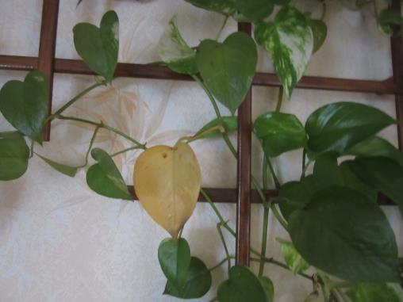

Nhìn chiếc lá tự nhiên đổi sắc, màu vàng nổi bật trên giàn lá xanh. Màu vàng úa biểu tượng của sự sắp ra đi, như con người đang trong mùa "chịu tang" của đại dịch corona virus năm 2020 này.

.
Ngồi đây ta lặng lẽ
Đếm từng chiếc lá vàng
Âm thầm rưng rưng lệ
Thương kiếp đời nhân gian
Ngồi nhìn lá vàng, mỗi chiếc có một vẻ khác nhau, có chiếc uốn cong vặn mình đau đớn như đang hấp hối, có chiếc đầu lá bắt đầu nhuốm vàng, lòng lo âu không biết lúc nào sẽ chia tay, có chiếc nằm yên trong dáng vẻ thanh thản rồi nhẹ nhàng buông mình một cách tự nhiên như đang say giấc ngủ yên lành.
Đời của lá mong manh, mới thấy còn xanh mượt mà nay úa vàng lìa cành bỏ ra đi. Và số mệnh con người hiện giờ cũng thế, đang vui tươi, hồn nhiên sống lại phải ra đi trong tức tưởi, khổ đau, mệt nhoài thân xác. Và cũng có người trở về nguồn một cách yên bình.
"Lá rụng về cội"... sau một quá trình sinh học sẽ biến thành chất dinh dưỡng nuôi cây cối. Lá đem thân xác úa tàn của mình để trả ơn cho cây. Và con người cũng thế, nào có khác chi!
Đời lá như người tuy ngắn ngủi mà đầy ý nghĩa nhân sinh.
Lá vàng nằm ở trên không
Bay đi tìm cội để mong thanh nhàn
Khi người từ biệt dương trần
Thân vùi cát bụi hồn an trên trời
Nhìn lá đang xanh chuyển sang vàng úa rồi héo tàn và sẽ buông rơi, ta mới thấy sự thật của một đời người đó là cái chết. Nó chẳng từ bỏ hay thương xót bất cứ một ai.
Nó đến thật bất ngờ khiến ta bàng hoàng.
Nó đem thân xác ta về nơi khác mà chẳng kịp từ giã thân bằng quyến thuộc, bạn hữu... Chuyến đi chỉ một mình thật cô đơn... Một chuyến đi xa.. viễn không bao giờ trở lại.
Như lời Phật dạy: "Mạng sống con người rất mong manh, trong một hơi thở chỉ có ra mà không có vào là kết thúc một kiếp người". Cho nên, ở bất cứ đâu trên trái đất này, từ văn minh đến lạc hậu, từ giàu sang đến hèn khó, từ trí thức đến bình dân... không ai thắng nổi cái chết, mọi người đều bình đẳng như nhau. Vậy ta phải can đảm chấp nhận sự sống lẫn sự chết và lấy yêu thương làm nền tảng để sống cho trọn một kiếp người.
" Bên phải tôi đây là người tôi yêu tôi thương
Bên trái tôi đây là người tôi yêu tôi thương
Trước mặt tôi đây là người tôi yêu tôi thương
Xung quanh tôi đây là người tôi yêu tôi thương"... (Người Tôi Yêu Tôi Thương)
Vậy cho nên:
Sẽ mãi là em chính em
Xinh tươi dịu dàng giống tơ mềm
Ru hồn tịnh độ nơi trần thế
Cuộc sống mượt mà như cỏ êm... (Sẽ Mãi Là Em)
Bởi vì:
Trót sinh làm kiếp con người
Cưu mang gánh khổ một đời gian truân
Đắm chìm trong bể trầm luân
Bao giờ ra khỏi để thân thanh nhàn
Biển đời luôn động chẳng an
Sóng tình thương lấp muôn ngàn nỗi đau
Hỏi mây hỏi gió về đâu?
Sao ta lại để chữ sầu trong tâm (Thoát Bể Trầm Luân)
Xin hãy an trú tự tâm:
Tay cầm cán chổi đong đưa
Quét bao nhiêu bận vẫn chưa sạch lòng
Lá vàng rối rít trên không
Bay đi tìm cội để mong an nhàn
Đài sen thanh khiết mùi nhang
Cớ sao tâm động miên man chẳng ngừng (Quét Lá Vườn Tâm)
Xin cầu nguyện cho người, cho bạn và cho tôi luôn tìm thấy niềm an lạc tự tâm trong từng mỗi phút giây.
Lundi 13.04.2020
Sương Anh - Strasbourg/France,